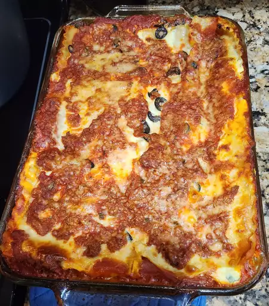

Lasagna

Description
Lasagna is a classic Italian casserole dish consisting of wide, flat pasta sheets layered with savory sauces
, various cheeses, and often meats or vegetables, then baked until bubbly. The dish typically features a
rich meat-based sauce (ragù), creamy béchamel or ricotta, and melted mozzarella or Parmesan.
Ingredients
- Meat as in sweet italin sausage and lean ground beef.
- An onion and two cloves of garlic
- Crushed tomatoes, tomato sauce and tomato paste
- Sugar
- Spices such as parsley, dried basil leaves, salt , italian seasoning, fennels seeds and black pepper.
- Lasagna noodles
- Cheese
- Egg
- Gather all ingredients.
- Cook sausage, ground beef, onion, and garlic in a Dutch oven over medium heat until well browned.
- Stir in crushed tomatoes, tomato sauce, tomato paste, and water. Season with sugar, 2 tablespoons
parsley, basil, 1 teaspoon salt, Italian seasoning, fennel seeds, and pepper. Simmer, covered,
for about 1 ½ hours, stirring occasionally.
- Bring a large pot of lightly salted water to a boil. Cook lasagna noodles in boiling water for
8 to 10 minutes. Drain noodles, and rinse with cold water.
- Preheat the oven to 375 degrees F (190 degrees C).
- To assemble, spread 1 ½ cups of meat sauce in the bottom of a 9x13-inch baking dish. Arrange
6 noodles lengthwise over meat sauce, overlapping slightly. Spread with 1/2 of the ricotta
cheese mixture. Top with 1/3 of the mozzarella cheese slices. Spoon 1 ½ cups meat sauce over
mozzarella, and sprinkle with 1/4 cup Parmesan cheese.
- Repeat layers, and top with remaining mozzarella and Parmesan cheese. Cover with foil: to
prevent sticking, either spray foil with cooking spray or make sure the foil does not touch
the cheese.
- Bake in the preheated oven for 25 minutes. Remove the foil and bake for an additional 25 minutes.
- Let the lasagna rest at room temperature for about 15 minutes before cutting; this helps it set and firm up.
- Serve and enjoy.